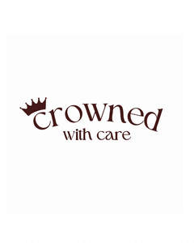

Trade Mark Journal No.2025/044 31 October 2025
UK00004273204 3 October 2025 (16,25,41)

- Class 16
- Paper and cardboard; printed matter; bookbinding material; photographs; stationery and office requisites, except furniture; adhesives for stationery or household purposes; drawing materials and materials for artists; paintbrushes; instructional and teaching materials; plastic sheets, films and bags for wrapping and packaging; printers' type, printing blocks. instructional and teaching materials; paper bags; envelopes and containers for packaging; disposable paper products; colouring books / coloring books; calendars; table napkins of paper; writing or drawing books; retractable reels for name badge holders [office requisites]; newsletters; newspapers; printed publications; printed matter; printed publications; signboards of paper or cardboard transfers [decalcomanias] / decalcomanias; transparencies [stationery]; bags [envelopes, pouches] of paper or plastics, for packaging; bookmarks / bookmarkers; books; booklets; catalogues; diagrams; flyers; magazines [periodicals]; manuals [handbooks] / handbooks [manuals]; name badges [office requisites]; note books; pamphlets; paper sheets [stationery]; pencils; school supplies [stationery]; stickers [stationery]; wrapping paper / packing paper; writing materials.
- Class 25
- Uniforms; socks; underwear / underclothing; shirts; ready-made clothing; outerclothing; Clothing; footwear; headwear; caps being headwear; babies' pants [underwear]; bandanas [neckerchiefs]; bath robes; bath sandals; bath slippers; bathing cap; bathing suits / swimsuits; bathing trunks / bathing drawers; beach clothes; beach shoes; belts [clothing]; bibs, not of paper; headbands [clothing]; jackets [clothing]; jerseys [clothing]; pyjamas / pajamas.
- Class 41
- Education; providing of training; vocational guidance [education or training advice]; vocational retraining training services provided via simulators; transfer of business knowledge and know-how [training]; teaching / educational services / instruction services; research in the field of education; publication of texts, other than publicity texts; publication of books; providing training and educational examination for certification purposes; providing online videos, not downloadable; providing online electronic publications, not downloadable; providing information in the field of education; production of radio and television programmes; production of shows; production of podcasts; practical training [demonstration]; organization of competitions [education or entertainment]; organization of exhibitions for cultural or educational purposes; online publication of electronic books and journals; multimedia library services; mobile library services / bookmobile services; film distribution; film production, other than advertising films; electronic desktop publishing; educational examination; arranging and conducting of in-person educational forums; arranging and conducting of seminars; arranging and conducting of workshops [training]; academies [education].
Doops hair Ltd